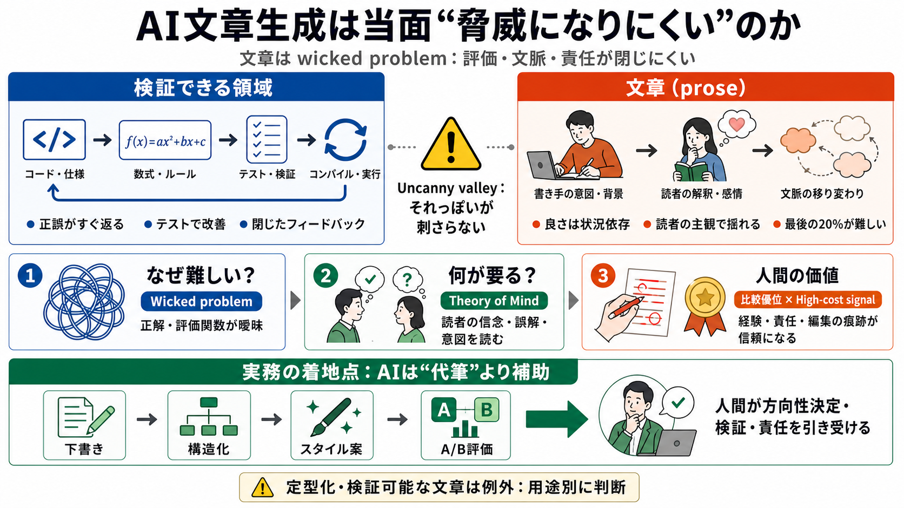

Measuring the Gap Between Human and LLM Research ...
Most existing evaluations of LLM ideation judge ideas individually, using criteria such as novelty, feasibility, impact,…

「文章」はウィキッド・プロブレムで、評価もフィードバックも閉じにくい。加えて、人間の価値は“比較優位”と“高コスト信号”に移る——という見立てを整理します。
AIはコードや検証しやすい領域では伸びるが、文章は「スラップ／陳腐な定型」に寄りやすいと観察される。著者は理由を技術不足ではなく、文章の性質そのものに求めます。
数学やコードはコンパイラ・テスト・形式検証で即フィードバックが返る。一方文章は文脈が動き続け、編集も終わりがないため、成功を機械的に確定しにくいとされます。
文章の課題は「ウィキッド・プロブレム（wicked problem）」として扱える。解が定義しにくく、客観的に正誤を判定しにくいことが、進歩のボトルネックになります。
文章は「読者の心的状態（belief / intent / 誤解）をリアルタイムに扱う」二者間問題だとする。LLMが統計的に次語を最適化するだけでは、能動的理解や賭け（skin in the game）が再現しにくい、という含意です。
著者の観点は、「理解・洞察・共鳴」を伴う文章と、「それらしく見える文章」を分けること。LLMは前者に到達しにくく、だからこそ陳腐／ロボット的に見える、と整理されます。
プログラミング職は置換されやすい一方、健全な文章表現の価値は当面大きくは揺らがない、という予測です。理由は、評価が主観的で、正誤を検証しにくいからです。
人間の価値は「AIが大量生産できない領域」へ集中する。さらに進化生物学的な比喩として、人間は“偽装しにくい証拠”＝高コストなシグナル（high-cost signal）を出せる、と説明します。
著者は「当面脅かされにくい」を主張し、文章すべてが恒久的に人間優位だとは言い切っていません。用途別に“AIが十分実用的になる可能性”は残ります。
私は、この枠組み（ウィキッド・プロブレム、読者心的状態の扱い、価値の経済移動）は一定の説得力があると思います。ただし評価方法や反証可能性が薄く、“文章一般への免疫”まで断定するには慎重であるべきです。
安全な運用は「下書き・構造化・スタイル案」として使い、人間が編集と責任を引き受けること。さらにタスク別にAIの強み／弱みを切り分けると判断ミスを減らせます。
この要約では、ウィキッド・プロブレム、Theory of Mind、高コスト信号（進化的比喩）などの一般的枠組みを土台にしています。
Most existing evaluations of LLM ideation judge ideas individually, using criteria such as novelty, feasibility, impact,…
the optimal way of combining human expertise and the use or training of AI tools is a fruitful ave-nue for research in e…
You may be wondering what I have been up to this year. My focus has been almost entirely on LLM-related work. Last year,…
Following this introduction, Section 2 provides a systematic review of current advancements in LLM text generation and t…
Eric Fruits serves as director of economic research at the International Center for Law & Economics. Kristian Stout hea…